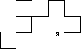
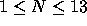

| Paper Folding |
If a large sheet of paper is folded in half, then in half again, etc, with all the folds parallel, then opened up flat, there are a series of parallel creases, some pointing up and some down, dividing the paper into fractions of the original length. If the paper is only opened ``half-way'' up, so every crease forms a 90 degree angle, then (viewed end-on) it forms a ``dragon curve''. For example, if four successive folds are made, then the following curve is seen (note that it does not cross itself, but two corners touch):

Write a program to draw the curve which appears after N folds. The exact specification of the curve is as follows:
From this view, the only unchanged part of the original paper is the piece containing the ``start edge'', and this piece will be horizontal, with the ``start edge'' on the left. This uniquely defines the curve. In the above picture, the ``start edge'' is the left end of the rightmost bottom horizontal piece (marked `s'). Horizontal pieces are to be displayed with the underscore character ``_'', and vertical pieces with the ``|'' character.
Input will consist of a series of lines, each with a single number N (  ). The end of the input will be marked by a line containing a zero.
Output will consist of a series of dragon curves, one for each value of N in the input. Your picture must be shifted as far left, and as high as possible. Note that for large N, the picture will be greater than 80 characters wide, so it will look messy on the screen. The pattern for each different number of folds is terminated by a line containing a single `^'.
2 4 1 0
|_ _| ^ _ _ |_|_| |_ _| _| |_| ^ _| ^